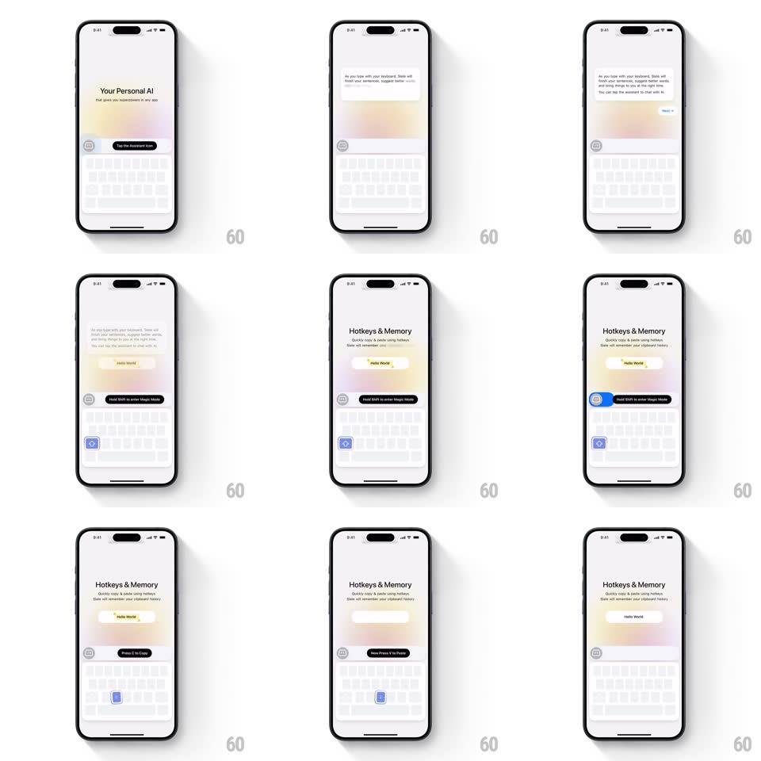

Media
Frame-by-frame

Rebuild this interaction 1:1: Slate's interactive keyboard onboarding - step-by-step coaching where the user actually performs each shortcut: tap the assistant key, hold Shift for Magic Mode, press C to copy, press V to paste - with live key highlights and feedback bubbles.

Rebuild this interaction 1:1: Slate's interactive keyboard onboarding - step-by-step coaching where the user actually performs each shortcut: tap the assistant key, hold Shift for Magic Mode, press C to copy, press V to paste - with live key highlights and feedback bubbles.
## Integration
Integration: stack-agnostic spec - springs given as stiffness/damping, timed motions as duration + curve; map every value to your framework and animation library of choice.
## Scene
A soft pastel-gradient screen behind a real keyboard at the bottom. Step cards center-screen: "Your Personal AI - that gives you superpowers in any app" with a "Tap the Assistant now" pill; then "Hotkeys & Memory - Quickly copy & paste using hotkeys" with a "Hello World" content bubble and instruction pills ("Hold Shift to enter Magic Mode", "Press C to Copy", "Now Press V to Paste").
## Motion spec
Pattern: guided do-it-yourself tutorial.
- The instruction pill pulses gently (scale 1 -> 1.04, 1.2s loop) until the user acts.
- The target key on the keyboard highlights (blue fill sweep, 200ms) in sync with its instruction - the assistant key, then Shift, then C, then V.
- On the correct press: the key flashes, the instruction pill ticks (checkmark draws, 150ms) and slides away (200ms), and the next instruction slides in from below (220ms, ease-out).
- Real-time feedback: pressing C makes the "Hello World" bubble flash and show "Copied"; pressing V pastes it into the field with a small type-on effect (character stagger 30ms).
- Wrong key: the pressed key wiggles (translateX +/-4px, twice, 200ms) and the instruction stays.
## Calibration
- This is not a movie - the flow waits for the user's actual keypresses.
- Each success beat resolves in under 400ms - the reward must feel instant.
## Reduced motion
Keys highlight without pulses; bubbles update without type-on.
## Don't miss
- The Shift hold is a real hold - the Magic Mode state shows dimmed keys except the live hotkeys.
- The gradient background shifts hue slightly between steps - quiet progress signaling.